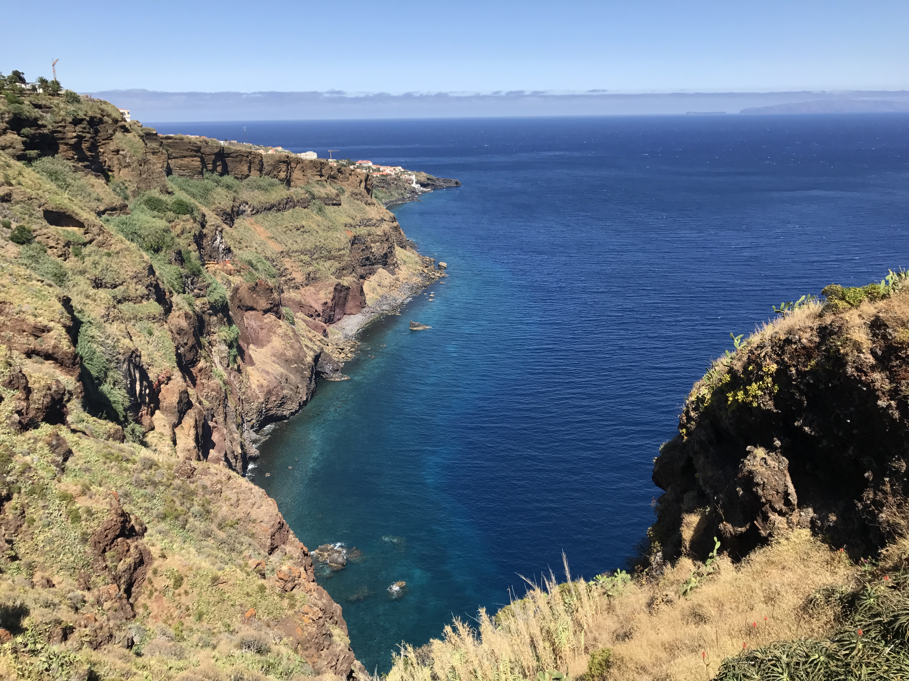
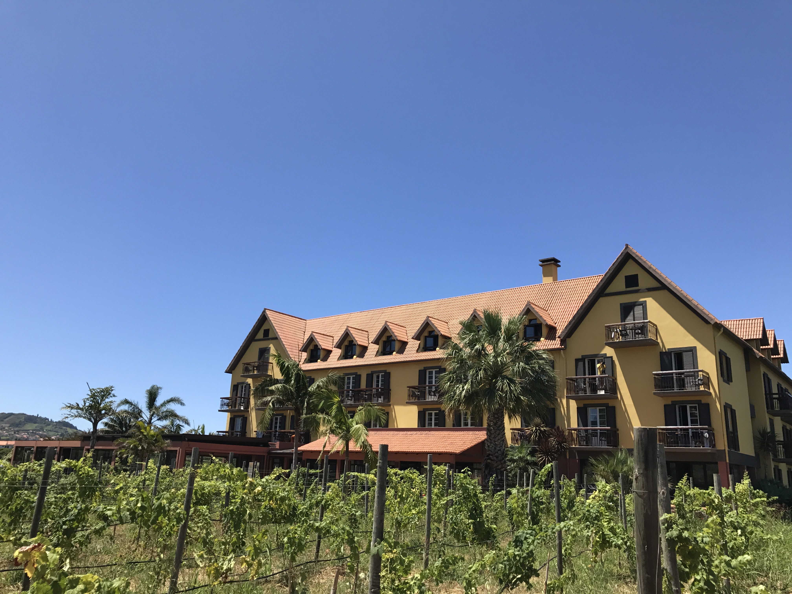

Levadavandringerne tager dig igennem et væld af forskellige former for natur. Alt fra junglelignende tropiske områder på øen, op ad bjerge, ned ad bjerge, forbi små boder, der håber at kunne tjene en skilling på de forbivandrende turister og andet godtfolk, der har begivet sig ud langs levadaerne. Vandringen foregår naturligvis i lige præcis dét, tempo man selv foretrækker, og skulle man gå hen og blive forpustet kan man med fordel stoppe op ved et af de mange udkigspunkter undervejs på ruterne. Udsigten herfra er mildest talt utrolig. Det er et ubeskriveligt syn. Det skal simpelthen opleves.
Vandringsruterne spænder fra et par få kilometer og helt op til en uges vandring. De bringer dig rundt i alle afkroge på Madeira, og øens højeste bjerg, Pico Ruivo, kan sammen med de grønne landskaber med storslåede vandfald, mørke tunneller, dybe dale og eukalyptus skov hurtigt give associationer til Jurassic Park.
Levadavandringer for enhver smag - og fysik
Er man ikke i topform rent fysisk kan man med fordel vælge blot at give sig i kast med en lille del af én af de længere vandringer. F.eks. er der Levada do Norte, som er en af de klart smukkeste – og længste – ruter på øen. Den starter i den lille landsby Campanario og slutter i Quinta Grande. Det er ikke unormalt at man en gang i mellem går nærmest direkte igennem køkkenhaven til ét af de mange små, hyggelige huse der ligger langs ruten. Alt i mens man betages af den storslåede natur finder man pludselig sig selv midt i hvad man skulle tro var en frugt og grøntsagsplantage med træer hvorpå der gror bananer, avocadoer, mango, passionsfrugt, figner, appelsiner, citroner, lime, grapefrugt og man vil sågar kunne finde sukkerrør, kaffebønner og vindruer på øen.
Det er muligt at tage af sted alene eller med sin egen gruppe, men det anbefales at man har en professionel guide med. Levadavandringerne er delt ind i tre forskellige sværhedsgrader. Det er meget vigtigt at have ordenligt fodtøj med solidt fodfæste eftersom at stierne kan være glatte. Man kan ikke drikke vandet fra levadaerne. Sørg for at have vand med selv. Jo højere man bevæger sig op, jo koldere kan det blive. Sørg derfor også for evt. at have en varm trøje med og måske endda regntøj, for en sikkerhedsskyld pga. det omskiftelige vejr.